FIFI-LS: Basic Cube Analysis using SOSPEX
Aim: Load FIFI-LS spectrum and
Data: Level 3 data.
Tools: SOSPEX
Instrument: FIFI-LS
Documentation: FIFI-LS data handbook
Notebook repository: https://github.com/SOFIAObservatory/Recipes
Goals
Inspect FIFI-LS data with SOSPEX
Introduction
This recipe is a beginner’s introduction to plotting FIFI-LS data
Ingredients:
Download and install SOSPEX from github
Download your Level 4 (fully resampled, “WXY”) data from the Infrared Science Archive (IRSA).
You can also use the following sample data if you just want to explore the capabilities of SOSPEX.
Look up resolution for line(s) of interest from FIFI-LS Observers Handbook.
For this example, we will use the [CII] observations of M82 (red channel, ~158 µm).
The example dataset can be downloaded directlyhere
Once SOSPEX is started (see README with distribution), a two panel GUI should open with the following buttons in the lower right panel:
File Open, Tutorials, Issues (bug report/feature request/etc), Apertures, Exit, and Status Bar.
Tutorials are available by clicking on the Tutorials button (question mark icon below the right hand panel, on the left) or via Help Tutorials on the menu system. You may want to step through some of the tutorials to familiarize yourself with the GUI.
Inspecting the Cube
Load your cube using File –> Open Cube (or the file open button – folder icon below the right hand panel, on the left):
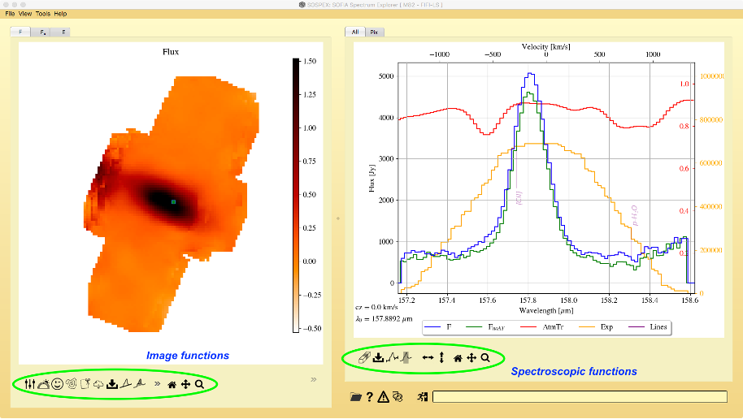The left panel should have three tabs:
F: median flux per spatial pixel over all spectral channels (Jy, with telluric correction)
:math:`F_{rm U}`: median flux per spatial pixel over all spectral channels (Jy, without telluric correction)
E: exposure map in seconds per spatial pixel
A set of buttons should appear in the lower part of the left panel which provide quick access to functions available in the main menus at upper left:
Adjust image levels
Choose color map
Blink between 2 images
Contours
Crop the cube
Download image from cloud
Save image
Fit continuum
Compute moments
Erase a region (masking)
Go back to original limits
Pan figure
Zoom in
In addition, the sky/pixel position and the flux are shown at the lower right for the current cursor location on the left panel.
Move the cursor around each of the images to get a feel for the total flux and exposure time per pixel, shown in lower right corner of the panel.
This is also a good time to change the image levels and color map if desired (buttons at lower left corner of panel). In this example, we have reversed the color map from the default.
The right panel shows the spectral dimension and should have 2 tabs:
All: Total flux as a function of wavelength summed over all spatial pixels.
Pix: Spectrum of the selected pixel in the image panel.
There should be a set of bottons at the bottom of the right panel as well that provide quick access to common spectroscopic tasks available in the main menu items at the upper left:
Cut part of cube (in wavelength space)
Save current spectrum
Draw continuum segments
Define a wavelength slice (for moment calculation or display)
Resize figure horizontally/vertically
Go back to original display
Pan figure
Zoom in
The spectra include the corrected (blue) and uncorrected (green) flux (F, :math:`F_{rm U}`) as well as the exposure spectrum (yellow; seconds per wavelength bin), and the atmospheric transmission spectrum (red) – smoothed to the FIFI-LS resolution. Also shown are the locations of prominent astrophysical lines (purple).
In regions of broad and/or relatively weak telluric absorption features, the corrected flux spectrum is expected to be accurate based on experience with both FIFI-LS and FORCAST. Some spectral regions (particularly at 63 µm) contain telluric features that cannot be corrected very well because they are either very sensitive to atmospheric conditions (and hence cannot be accurately modeled by ATRAN post-facto) or very deep and narrow (or both). (See the FIFI-LS data handbook for further discussion.) Hence, the uncorrected spectrum is also shown so that the user can assess the telluric correction.
Switching to the “Pix” tab allows the user to inspect the spectrum at each pixel by moving (click and drag) the highlighted pixel in the left panel:
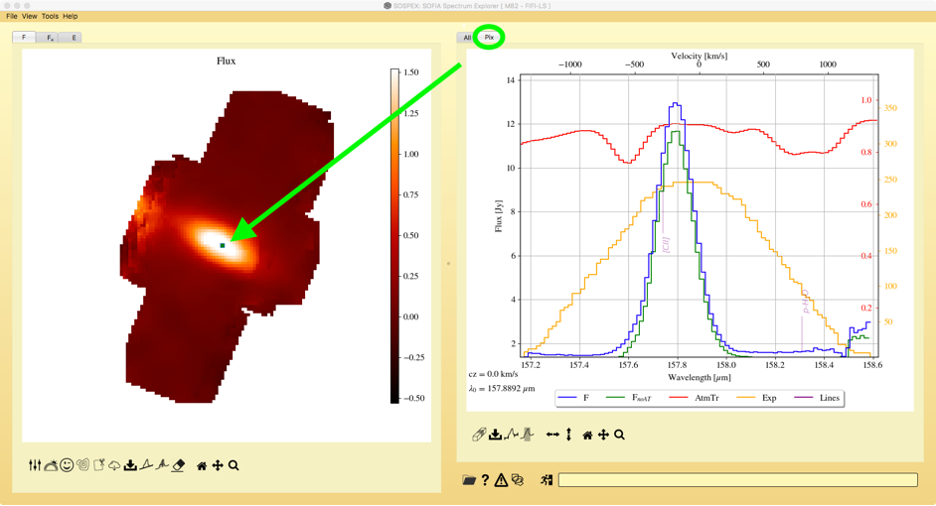Again, drag the highlighted pixel around the image in order to get a sense of the overall line strength and shape as a function of position across the cube, and especially in regions of interest.
Comparing to a Reference Image
It is often very instructive to compare images in the IR with those at other wavelengths. SOSPEX provides access to some online surveys which can be very useful in understanding the data at longer wavelengths. Use the File –> Import Image function to load a survey image from the list, or one of your own from disk (‘local’ at the top of the Selection window).
For M82 we have loaded both the WISE Band 1 (3.4 µm) and Pan-STARRS z-band images for comparison. The images are automatically registered with the FIFI-LS cube and displayed in separate tabs in the left panel. You will need to select the tab to view the image:
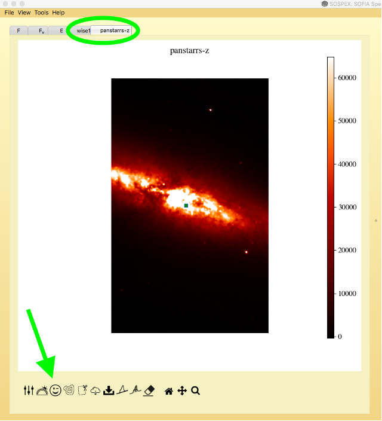You can then “blink” between any two tabs to better compare the survey image with the FIFI-LS data.
In the case of M82, the strongest [CII] emission comes from the central part of the galaxy, but by moving the highlighted pixel around (click and drag) you can see that there is significant emission (from the outflow) coming from above and below the plane as well:
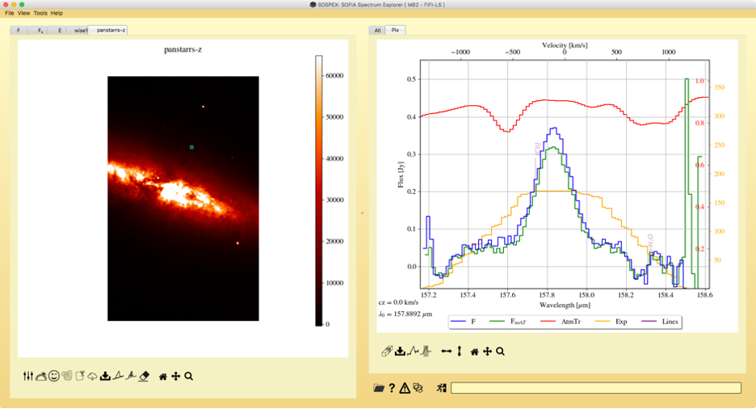Reference Velocity and Redshift
The reference velocity shown at the top of the spectrum panel is initially set to the central wavelength pixel. To reset the reference wavelength to that of a line of interest, simply click on the line identification (in purple) and select ‘yes’ when asked if you want to update the reference wavelength:
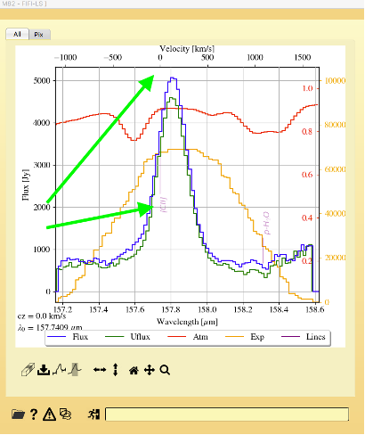The cz value is shown at the bottom of the plot. If the FITS header contains the velocity information from USPOT (newer data only) then this will be entered here automatically, otherwise it will default to zero. A redshift can be applied to the scale by clicking on the cz value; this shifts the velocity scale and the line identification:
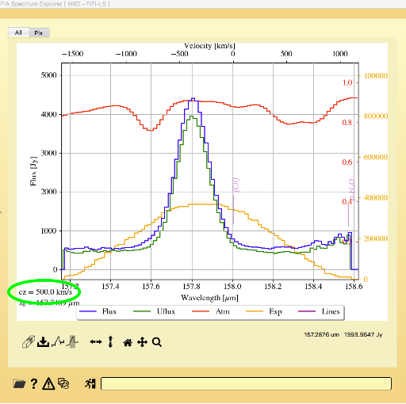It’s also possible to move the reference line and determine the resulting redshift by clicking the line identifier (in purple) and dragging to the new position in velocity. In the below example we have set the reference line ([CII]) to the approximate location of the emission peak:
Cutting, Cropping, and Masking
It is often advantageous to remove parts of the cube which are either not of interest, or that suffer from observation/data reduction artefacts. (We do not recommend, however, removing regions simply because they have low S/N.) For example: in the case of M82, the east (left) side of the cube suffers from artefacts, which can be seen in the total flux and also in the spectra of individual pixels:
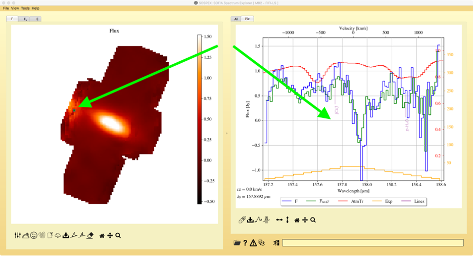This corresponds to a region of low exposure as seen in the exposure map:
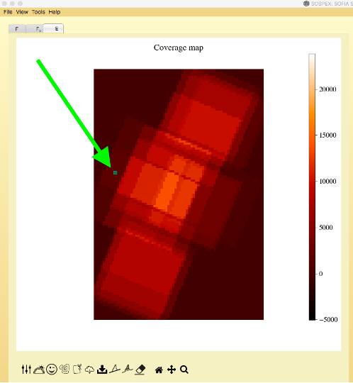In order to prevent this region from skewing later calculations, we can mask it using the Erase tool. In this case we will mask only the region with low exposure coverage. Select Tools –> Mask part of cube –> …inside a polygon (or click the eraser tool at the bottom of the left panel) and then use the cursor to identify the corners of the region:
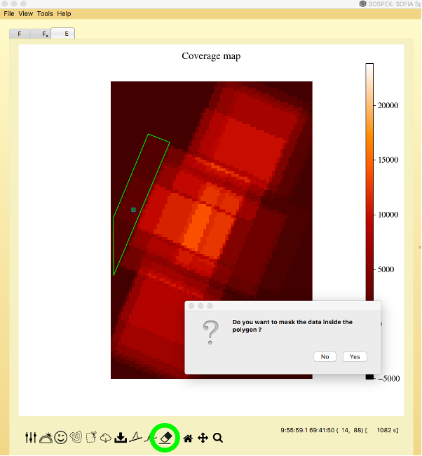After confirming the region, switch back to the Flux tab to see the results:
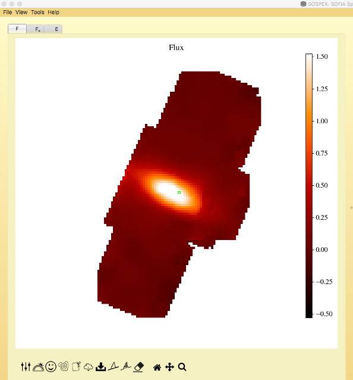(One can also simply crop the cube, see the Tutorials for instructions.)
The spectral dimension of the cube sometimes suffers from edge effects due to the observation and/or poor telluric correction. The spectral edges of the cube can be trimmed using the Cut tool. In the M82 case, we will trim the long wavelength edge at about 158.4 µm. Select File –> Save cube –> Cut, and identify the spectral region to keep by clicking and dragging over a region in wavelength space:
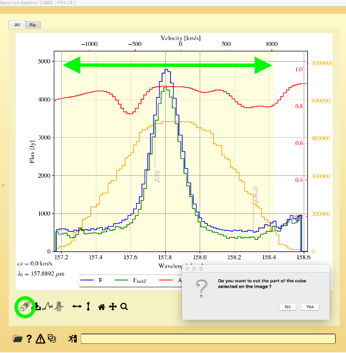After confirming the region, the cut region will be saved to a separate file. Now use File –> Open Cube to load the newly created cut and masked cube.
Working with Apertures
It is sometimes desirable to sum over a sub-region or fixed aperture in order to compare with other datasets. In the case of M82 we might want to sum over only the central part of the galaxy, rather than the whole image. Use the Aperture tool (button below the right panel or in Tools –> Select aperture –> Ellipse) to define an elliptical aperture and place it over the central part of the galaxy (note that the initial definition only draws an ellipse with axes in x in y; once the ellipse is placed it can be tilted, moved and re-sized as required):
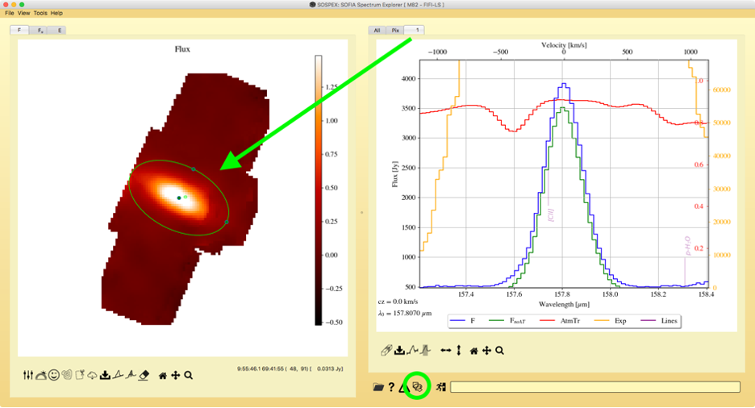The spectrum summed over all pixels in the aperture is now shown in tab “1” in the right panel. The aperture spectrum as well as the aperture can both be exported for comparison to other datasets using the Save Spectrum (File –> Save spectrum or button at the bottom left of the right panel) and File –> Aperture I/O –> Export functions (see the Tutorials for additional details). Once finished with the aperture, you can remove it by selecting the aperture and then hitting “d”.
Fitting the Continuum
Determining the properties of the emission line throughout the cube is done by calculating velocity moments. But before that can be done, the continuum must be fit. Select Tools –> Fit Continuum –> Define Guess (or use the Fit Continuum button at the bottom left of the right panel) to identify the 2 wavelength regions to use across the cube for continuum fitting. A dialog will pop-up for the continuum parameters:
Function: Can be either a “Constant” offset or a linear “Slope”, as appropriate for the data.
Boundary: Set to “Positive” to prevent a constant offset from being below zero, if you know this would be unphysical.
Kernel: This is the spatial kernel (single pixel, 5 pixels in a + shape, 9 pixels in a box) used to determine the flux at each wavelength. Larger kernels provide better S/N for the continuum fit and are usually the best option.
After selecting your parameters (in this example we use Function = “Slope”, Boundary = “None”, and a 9-pixel kernel), use the mouse to identify two regions on the spectrum panel for continuum fitting throughout the cube. This must be done on the “Pix” tab. Use the “All” tab to identify the approximate regions, and then switch to the “Pix” tab to actually select the regions:
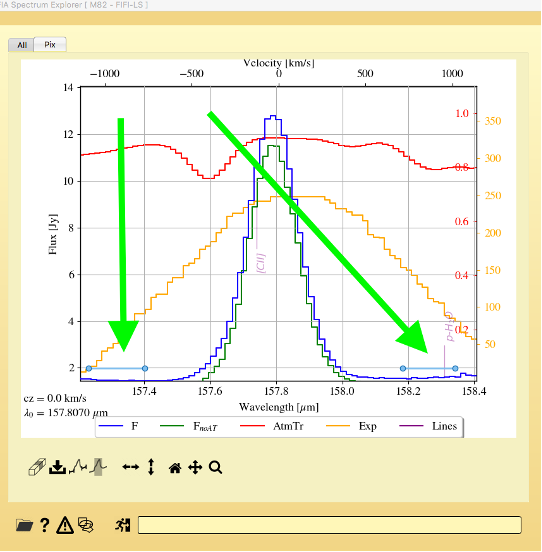Then select Tools –> Fit Continuum –> Fit All Cube. When the fitting is complete, a new tab will appear in the left panel called C0 which shows the continuum flux at the reference wavelength, and a light blue line is shown in the right hand spectrum panel showing the fitted continuum.
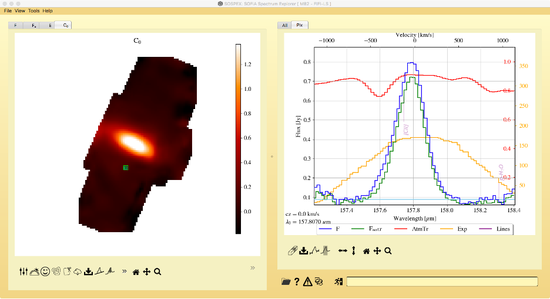If desired, the user can then subtract off the continuum and save the results using File –> Save cube –> Continuum subtracted, and then open the continuum subtracted cube.
Calculating Line Intensity and Velocity Moments
Once the continuum is fit, the line intensity and velocity moments can be calculated (see the tutorial for a definitions of the various moments). To select the wavelength region over which to calculate the moments, select Tools –> Compute moments –> Define slice. Again, this must be done on the “Pix” tab, but it is helpful to use the “All” tab to identify the wavelength region desired.
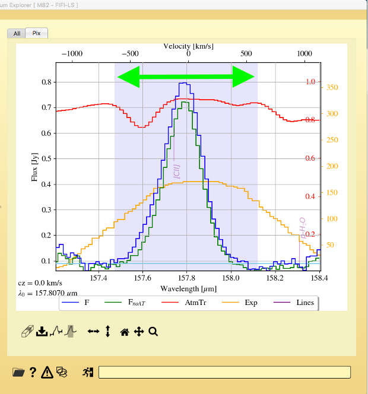Once the wavelength region has been defined, simple select Tools –> Compute Moments –> Compute all cube (note that for larger cubes it may take a minute or so to complete the calculations). When done, a number of new tabs will appear in the left panel: one for each moment, along with velocity and dispersion (which are derived from the M1 and M2 moments respectively). The right hand panel now also shows a model gaussian using the calculated moments overplotted for each pixel. Note that this is not a fit, but a model line for comparison. For high S/N lines, the profile should match the model Gaussian fairly closely. However, for weaker lines, the actual profile may be much narrower.
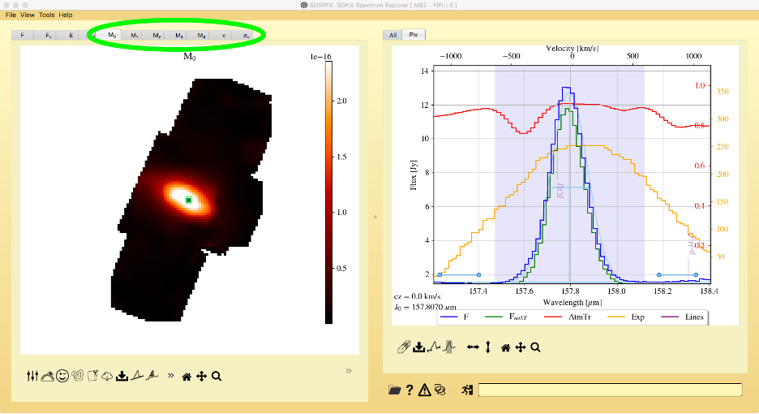The M0 moment corresponds to the line intensity. The total intensity at each pixel is given in W/m2. It is usually desirable to compare the total intensity with the velocity and dispersion maps. The easiest way to do this is to make a contour plot of the intensity, which will then be displayed on all other tabs. With the M0 map selected, press the Contour button at the bottom to generate the default set of contours for the image:
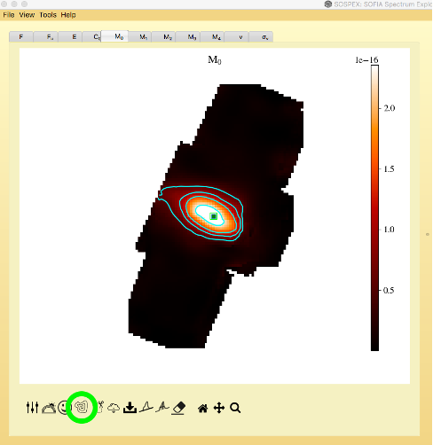(Use the contour tutorial for instructions on how to modify the contour plot, I like to add a few more contour lines to better illustrate any gradients).
Now switch to the velocity map to compare the velocity field to the line intensity; you will probably want to switch back to linear scaling and perhaps change the color map for the velocity display (both done using the buttons below the left panel). If you click the Adjust Image Levels button at the bottom, you can restrict the display to the velocity regions of interest. In the case of M82 we would like to restrict the display to levels around the average velocity:
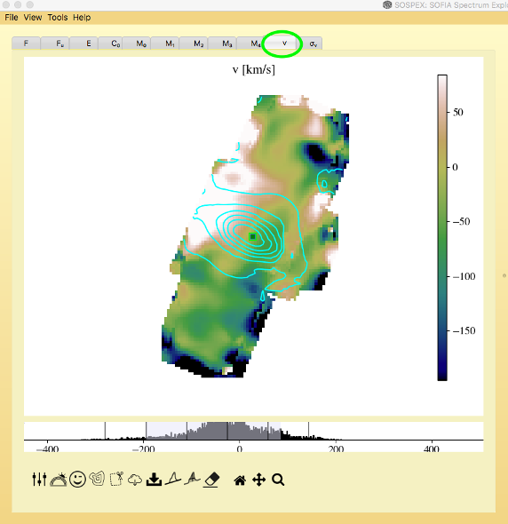There appears to be a strong gradient in the velocity that bisects the long axis of the line emission: which is what we would expect for an edge-on rotating galaxy. The gradient can also be seen in the spectra at each pixel by dragging the pixel in the left-hand panel along the long axis of the intensity contours:
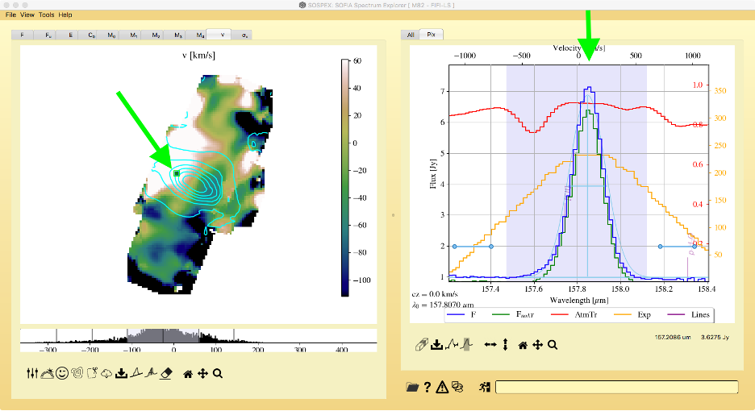 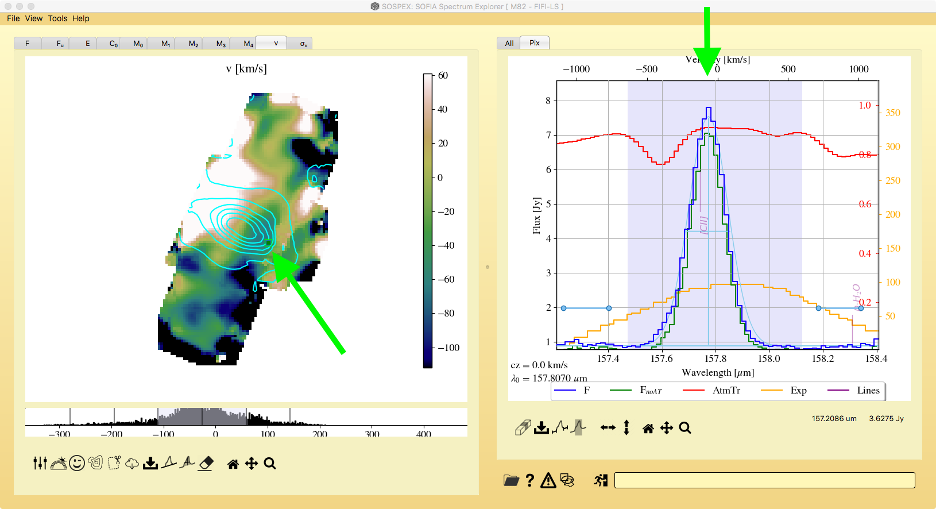Switching to the dispersion (σV) tab, we can evaluate the width of the line as a function of position across the map. It is important to look up the resolution of the instrument (see the FIFI-LS section of the Observers Handbook) in order to evaluate the dispersion map. In this case, the resolution of FIFI-LS is approximately R = 1250 at 157.8 µm, which corresponds to a line FWHM of 240 km/s and thus a dispersion of σV = 102 km/s.
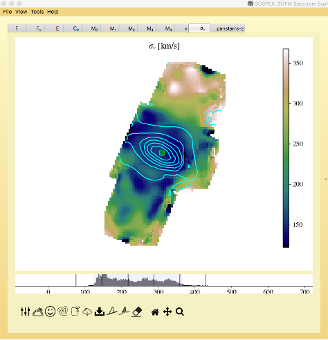As can be seen from the levels, the line widths across the cube are slightly higher than the resolution and hence the line is marginally resolved. (Note that the high values in the northern and southern edges of the cube coincide with regions of low S/N and are suspect.)